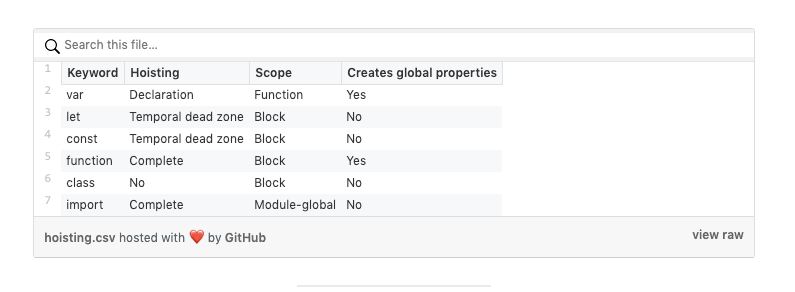
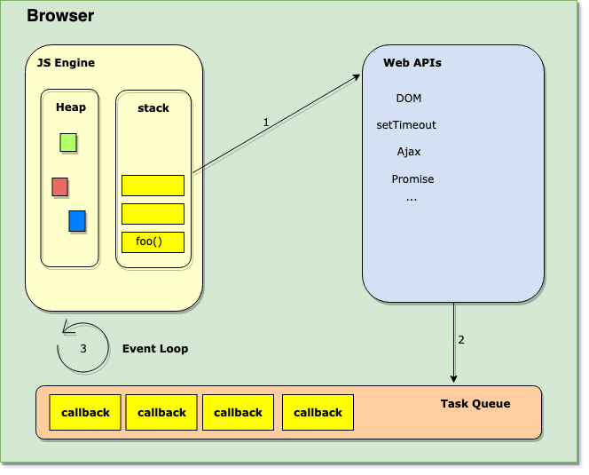
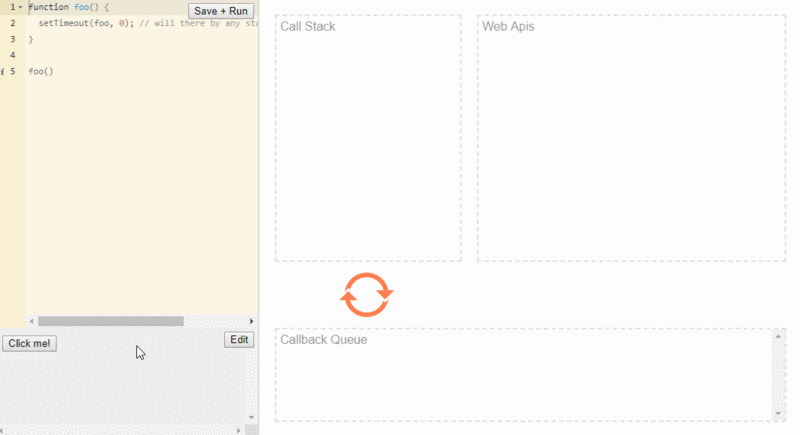

摘要： 神奇的JS系列。
Fundebug经授权转载，版权归原作者所有。
JavaScript 是一种有趣的语言，我们都喜欢它，因为它的性质。浏览器是JavaScript的主要运行的地方，两者在我们的服务中协同工作。JS有一些概念，人们往往会对它掉以轻心，有时可能会忽略不计。原型、闭包和事件循环等概念仍然是大多数JS开发人员绕道而行的晦涩领域之一。正如我们所知，无知是一件危险的事情，它可能会导致错误。
接下来，来看看几个问题，你也可以试试想想，然后作答。
var a = 10;
function foo() {
console.log(a); // ??
var a = 20;
}
foo();var a = 10;
function foo() {
console.log(a); // ??
let a = 20;
}
foo(); var array = [];
for (var i = 0; i < 3; i++) {
array.push(() => i);
}
var newArray = array.map(el => el());
console.log(newArray); // ?? function foo() {
setTimeout(foo, 0); // 是否存在堆栈溢出错误?
}function foo() {
return Promise.resolve().then(foo);
} var obj = { x: 1, y: 2, z: 3 };
[...obj]; // TypeErrorvar obj = { a: 1, b: 2 };
Object.setPrototypeOf(obj, { c: 3 });
Object.defineProperty(obj, "d", { value: 4, enumerable: false });
// what properties will be printed when we run the for-in loop?
for (let prop in obj) {
console.log(prop);
}var x = 10;
var foo = {
x: 90,
getX: function() {
return this.x;
}
};
foo.getX(); // prints 90
var xGetter = foo.getX;
xGetter(); // prints ??现在，让我们从头到尾回答每个问题。我将给您一个简短的解释，同时试图揭开这些行为的神秘面纱，并提供一些参考资料。
undefined使用var关键字声明的变量在JavaScript中会被提升，并在内存中分配值undefined。 但初始化恰发生在你给变量赋值的地方。 另外，var声明的变量是函数作用域的，而let和const是块作用域的。 所以，这就是这个过程的样子：
var a = 10; // 全局使用域
function foo() {
// var a 的声明将被提升到到函数的顶部。
// 比如:var a
console.log(a); // 打印 undefined
// 实际初始化值20只发生在这里
var a = 20; // local scope
}ReferenceError：a undefinedlet和const声明可以让变量在其作用域上受限于它所使用的块、语句或表达式。与var不同的是，这些变量没有被提升，并且有一个所谓的暂时死区(TDZ)。试图访问TDZ中的这些变量将引发ReferenceError，因为只有在执行到达声明时才能访问它们。
var a = 10; // 全局使用域
function foo() {
// TDZ 开始
// 创建了未初始化的'a'
console.log(a); // ReferenceError
// TDZ结束，'a'仅在此处初始化，值为20
let a = 20;
}下表概述了与JavaScript中使用的不同关键字声明的变量对应的提升行为和使用域：

[3, 3, 3]在for循环的头部声明带有var关键字的变量会为该变量创建单个绑定（存储空间）。 阅读更多关于闭包的信息。 让我们再看一次for循环。
// 误解作用域:认为存在块级作用域
var array = [];
for (var i = 0; i < 3; i++) {
// 三个箭头函数体中的每个`'i'`都指向相同的绑定，
// 这就是为什么它们在循环结束时返回相同的值'3'。
array.push(() => i);
}
var newArray = array.map(el => el());
console.log(newArray); // [3, 3, 3]如果使用 let 声明一个具有块级作用域的变量，则为每个循环迭代创建一个新的绑定。
// 使用ES6块级作用域
var array = [];
for (let i = 0; i < 3; i++) {
// 这一次，每个'i'指的是一个新的的绑定，并保留当前的值。
// 因此，每个箭头函数返回一个不同的值。
array.push(() => i);
}
var newArray = array.map(el => el());
console.log(newArray); // [0, 1, 2]解决这个问题的另一种方法是使用闭包。
let array = [];
for (var i = 0; i < 3; i++) {
array[i] = (function(x) {
return function() {
return x;
};
})(i);
}
const newArray = array.map(el => el());
console.log(newArray); // [0, 1, 2] JavaScript并发模型基于“事件循环”。 当我们说“浏览器是 JS 的家”时我真正的意思是浏览器提供运行时环境来执行我们的JS代码。
浏览器的主要组件包括调用堆栈，事件循环，任务队列和Web API。 像setTimeout，setInterval和Promise这样的全局函数不是JavaScript的一部分，而是 Web API 的一部分。 JavaScript 环境的可视化形式如下所示：

JS调用栈是后进先出(LIFO)的。引擎每次从堆栈中取出一个函数，然后从上到下依次运行代码。每当它遇到一些异步代码，如setTimeout，它就把它交给Web API(箭头1)。因此，每当事件被触发时，callback 都会被发送到任务队列（箭头2）。
事件循环(Event loop)不断地监视任务队列(Task Queue)，并按它们排队的顺序一次处理一个回调。每当调用堆栈(call stack)为空时，Event loop获取回调并将其放入堆栈(stack )(箭头3)中进行处理。请记住，如果调用堆栈不是空的，则事件循环不会将任何回调推入堆栈。
现在，有了这些知识，让我们来回答前面提到的问题：
foo()会将foo函数放入调用堆栈(call stack)。setTimeout。foo回调函数传递给WebAPIs(箭头1)并从函数返回，调用堆栈再次为空foo将被发送到任务队列foo回调并将其推入调用堆栈进行处理。运行示意图如下所示：

代码部署后可能存在的BUG没法实时知道，事后为了解决这些BUG，花了大量的时间进行log 调试，这边顺便给大家推荐一个好用的BUG监控工具 Fundebug。
大多数时候，开发人员假设在事件循环
在底层来看，JavaScript中有宏任务和微任务。setTimeout回调是宏任务，而Promise回调是微任务。
主要的区别在于他们的执行方式。宏任务在单个循环周期中一次一个地推入堆栈，但是微任务队列总是在执行后返回到事件循环之前清空。因此，如果你以处理条目的速度向这个队列添加条目，那么你就永远在处理微任务。只有当微任务队列为空时，事件循环才会重新渲染页面、
现在，当你在控制台中运行以下代码段
function foo() {
return Promise.resolve().then(foo);
}每次调用'foo'都会继续在微任务队列上添加另一个'foo'回调，因此事件循环无法继续处理其他事件（滚动，单击等），直到该队列完全清空为止。 因此，它会阻止渲染。
展开语法 和 for-of 语句遍历iterable对象定义要遍历的数据。Array 或Map 是具有默认迭代行为的内置迭代器。对象不是可迭代的，但是可以通过使用iterable和iterator协议使它们可迭代。
在Mozilla文档中，如果一个对象实现了@@iterator方法，那么它就是可迭代的，这意味着这个对象(或者它原型链上的一个对象)必须有一个带有@@iterator键的属性，这个键可以通过常量Symbol.iterator获得。
上述语句可能看起来有点冗长，但是下面的示例将更有意义：
var obj = { x: 1, y: 2, z: 3 };
obj[Symbol.iterator] = function() {
// iterator 是一个具有 next 方法的对象，
// 它的返回至少有一个对象
// 两个属性：value＆done。
// 返回一个 iterator 对象
return {
next: function() {
if (this._countDown === 3) {
const lastValue = this._countDown;
return { value: this._countDown, done: true };
}
this._countDown = this._countDown + 1;
return { value: this._countDown, done: false };
},
_countDown: 0
};
};
[...obj]; // 打印 [1, 2, 3]还可以使用 generator 函数来定制对象的迭代行为：
var obj = { x: 1, y: 2, z: 3 };
obj[Symbol.iterator] = function*() {
yield 1;
yield 2;
yield 3;
};
[...obj]; // 打印 [1, 2, 3]for-in循环遍历对象本身的可枚举属性以及对象从其原型继承的属性。 可枚举属性是可以在for-in循环期间包含和访问的属性。
var obj = { a: 1, b: 2 };
var descriptor = Object.getOwnPropertyDescriptor(obj, "a");
console.log(descriptor.enumerable); // true
console.log(descriptor);
// { value: 1, writable: true, enumerable: true, configurable: true }现在你已经掌握了这些知识，应该很容易理解为什么我们的代码要打印这些特定的属性
var obj = { a: 1, b: 2 }; //a，b 都是 enumerables 属性
// 将{c：3}设置为'obj'的原型，并且我们知道
// for-in 循环也迭代 obj 继承的属性
// 从它的原型，'c'也可以被访问。
Object.setPrototypeOf(obj, { c: 3 });
// 我们在'obj'中定义了另外一个属性'd'，但是
// 将'enumerable'设置为false。 这意味着'd'将被忽略。
Object.defineProperty(obj, "d", { value: 4, enumerable: false });
for (let prop in obj) {
console.log(prop);
}
// 打印
// a
// b在全局范围内初始化x时，它成为window对象的属性(不是严格的模式)。看看下面的代码:
var x = 10; // global scope
var foo = {
x: 90,
getX: function() {
return this.x;
}
};
foo.getX(); // prints 90
let xGetter = foo.getX;
xGetter(); // prints 10咱们可以断言：
window.x === 10; // truethis 始终指向调用方法的对象。因此，在foo.getx()的例子中，它指向foo对象，返回90的值。而在xGetter()的情况下，this指向 window对象, 返回 window 中的x的值，即10。
要获取 foo.x的值，可以通过使用Function.prototype.bind将this的值绑定到foo对象来创建新函数。
let getFooX = foo.getX.bind(foo);
getFooX(); // 90就这样！ 如果你的所有答案都正确，那么干漂亮。 咱们都是通过犯错来学习的。 这一切都是为了了解背后的“原因”。
代码部署后可能存在的BUG没法实时知道，事后为了解决这些BUG，花了大量的时间进行log 调试，这边顺便给大家推荐一个好用的BUG监控工具 Fundebug。
Fundebug专注于JavaScript、微信小程序、微信小游戏、支付宝小程序、React Native、Node.js和Java线上应用实时BUG监控。 自从2016年双十一正式上线，Fundebug累计处理了10亿+错误事件，付费客户有阳光保险、核桃编程、荔枝FM、掌门1对1、微脉、青团社等众多品牌企业。欢迎大家免费试用！